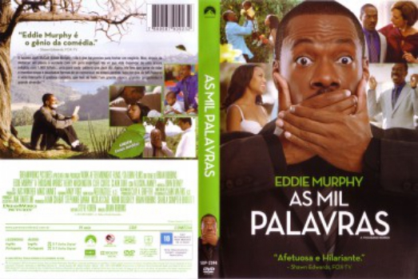

As Mil Palavras (2012)


He only has 1000 words left to discover what matters the most.

Avaliação (TMDb):


6.1/10 (1K votos)
Avaliação (Usuário):
Outro Título:A Thousand Words (Título Original)
País:United States, 91 minutos
Idiomas falados:Inglês, Português
Gênero(s):Drama, Comédia
Diretor(s):Brian Robbins
Codec:MPEG-2 (DVD)
Número: 663
Sinopse:
Um homem descobre que só tem direito a proferir mil palavras antes de morrer. Quais será as suas últimas palavras? Há alguma forma de mudar o seu destino?
Elenco:
Eddie Murphy, Kerry Washington, Cliff Curtis, Clark Duke, Allison Janney, Emanuel Ragsdale, Jill Basey, Greg Collins, Robert LeQuang, Michael G. Wilkinson
Tipo de mídia: DVD5,
Legendas: Inglês, Português
Alugado: Não
Tela: 2.35:1